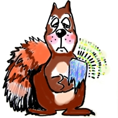
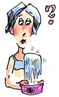
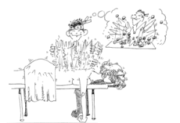

This page has usage examples for the following words:

acute stage 急性期 きゅうせいき
adhesive capsulitis 密着性被嚢炎
みっちゃくせいひのうえん
contracture 拘縮 こうしゅく
frozen shoulder 五十肩 ごじゅうかた
joint 関節 かんせつ
muscle 筋 きん
orthopedic surgery 整形外科 せいけいげか
orthopedic surgeon 整形外科医 せいけいげかい
pain 疼痛 とうつう
periarthritis of the shoulder 肩関節周囲炎
かたかんせつしゅういえん
physical therapy 理学療法 りがくりょうほう
physical therapist 理学療法士 りがくりょうほうし
rehabilitation リハビリ療法 リハビリりょうほう
shoulder blade, scapula 肩甲骨 けんこうこつ
upper arm 上腕 じょうわん
My left shoulder started to hurt and before long, I couldn't raise my left arm higher than shoulder-level.
左肩が痛みだし、そのうちに痛くて腕が肩よりも上に上がらなくなりました。
ひだりかたがいたみだし、そのうちにいたくてうでがかたよりもうえにあがらなくなりました。
I can't rotate my arms because my shoulder hurts.
肩の関節が痛くて、前後にまわすことが出来ません。
かたのかんせつがいたくて、ぜんごにまわすことができません。
Should I move my arms around even if it still hurts ?
痛くても無理にでも動かすようにした方がよいですか。
いたくても むりにでも うごかすようにしたほうがよいですか。
Is it okay, if I massaged my shoulder myself?
自己流でマッサージをしても大丈夫ですか。
じこりゅうでマッサージをしてもだいじょうぶですか。
I have experienced the same kind of pain before.
このような痛みは今までに何度か経験しています。
このようないたみは いままでに なんどかけいけんしています。
I have put up with pain, because I dislike going to the doctor.
医者嫌いなので、症状がひどくなるまで我慢していました。
いしゃぎらいなので、しょうじょうがひどくなるまで がまんしていました。

You should get(receive) physical therapy.
理学療法をおすすめします。
りがくりょうほうをおすすめします。
Shoulder exercise is very important.
(It is very important to exercise your shoulders.)
肩の運動がたいへん重要です。
かたのうんどうが たいへんじゅうようです。
Your shoulder is very tight.(stiff)
肩のあたりがたいへんこっています。
かたのあたりが たいへんこっています。
A conversation between a patient and a doctor about periarthritis of the shoulder
Patient:
While having a pain in the left shoulder, I have still managed to perform my daily activities. As the pain increases, getting around is becoming more difficult. Do I have “Gojyukata (frozen shoulder)?”
左肩が痛いと感じながら、なんとか暮らしていましたが、痛みが増すと共に、日常生活にも支障をきたすようになりました。五十肩でしょうか。
Doctor:
Gojyukata (50-year-old shoulder) is a popular name for adhesive capsulitis (formerly called periarthritis of the shoulder), which appears in the 40s and is the most prevalent in the 50s. Thus, it is called a gojyukata (50-year-old shoulder). It is called a frozen shoulder in American English. It is said that 20 to 30% of the Japanese experience the condition. In most cases, the condition appears without injury or any special cause. The capsule that surrounds the shoulder joint contracts and forms scar tissue, causing the pain in the shoulder.
The clinical course is divided into three stages; the first stage is the pain stage, which lasts about 2 months, the second is the contracture stage, lasting one year and the last is the natural healing stage, which takes about one year. The problem is during the second stage in which joint contracture as well as muscle atrophy occur. Treatment of pain at the first stage must be followed by continual rehabilitation with physical therapy. As there is a limitation to what patients can do by themselves, they should be seen by physical therapists. If the contracture of the shoulder joint is severe, surgical treatment may be necessary.
五十肩は密着性被嚢炎（元来は肩関節周囲炎）の俗称で４０才代から現れだし、５０才代でピークを迎えるのでそう呼ばれています。米語では frozen shoulder（凍肩）といいます。日本人の２、３割が発病するといわれています。殆どの症例で怪我や特別な原因なく肩の痛みが発現します。肩を構成している上腕骨頭を包み込んでいる嚢が拘縮し、瘢痕を形成し、それが肩の痛みとなって現れます。
経過は、３期に分けられ最初の２ヵ月くらいが疼痛期、次に、痛みの為に関節を動かさなくなると関節が硬くなって拘縮期に入り、これが普通一年近く続き、最後に自然に治るまで更に一年かかります。問題は、第２期の関節の拘縮、更に、筋肉の萎縮です。急性期の痛みの治療の後引き続き、理学療法によるリハビリを受ける必要があります。ご自分でやるには限界がありますから、専門のリハビリ施設にいらっしゃることをおすすめします。肩関節の拘縮が重症であれば外科的治療を必要とする場合もあります。

[go02]
| © 1995-2013 NACOS International Institute. All Rights Reserved. |